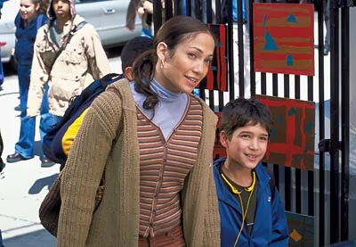
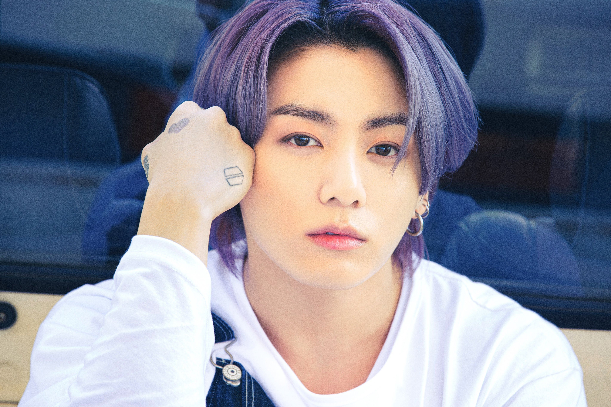
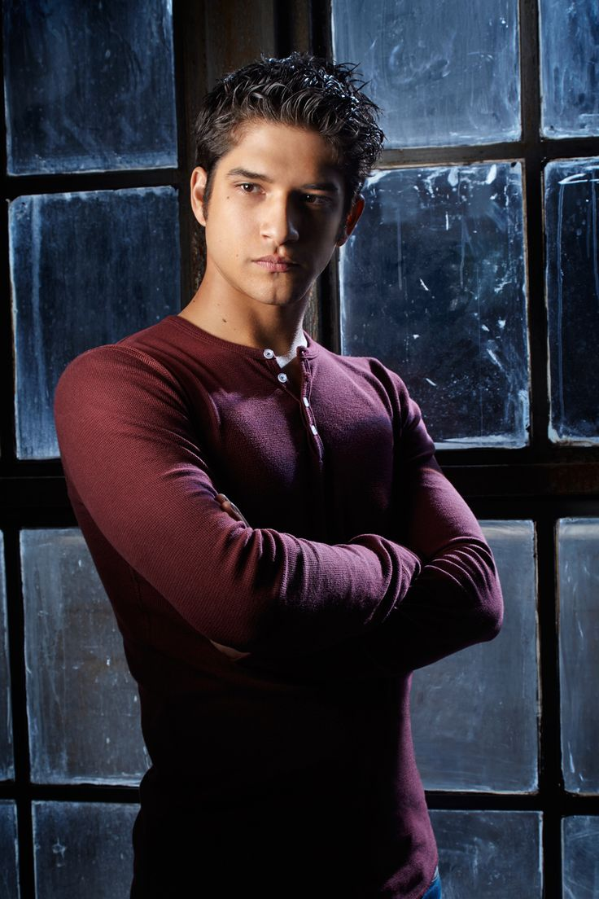

Фильмы


Первая картина с участием Тайлера Пози, биографическая драма «Военный ныряльщик», вышла на экраны в 2000 году. Правда, в титрах имени ребенка не указали, но зато он получил первый опыт работы с кинокамерой и понаблюдал за мастерством Роберта Де Ниро и Шарлиз Терон.
Затем мальчик появлялся в сериалах «Тайны Смолвиля» и «Без следа» и посотрудничал с Арнольдом Шварценеггером в боевике «Возмещение ущерба». Более пристальное внимание зрителей досталось Тайлеру, когда он сыграл «сына» Дженнифер Лопес в романтической мелодраме «Госпожа горничная». С тех пор Пози и Лопес, несмотря на разницу в возрасте, являются хорошими друзьями.
Подрастая, Тайлер Пози получал всё больше и больше интересных ролей. Стоит отметить триллер «Наизнанку», фэнтезийный фильм «Веритас: Принц правды» и спортивную драму «Легендарный», где актер исполнял важных персонажей. Еще он должен был появиться в саге «Сумерки» в роли юного оборотня Сета Клируотера, но в итоге режиссер взял вместо него Бу Бу Стюарта.
Однако судьбе было угодно, чтобы оборотня Тайлер все же сыграл. В молодёжном мистико-драматическом телесериале «Волчонок» Пози досталась роль школьника Скотта МакКолла, который после укуса оборотня превращается в волка. Эта картина сделала из молодого актера звезду мирового масштаба.

Кроме того, он появлялся в пародийной комедии «Очень страшное кино 5», в подростковой мелодраме «Белая лягушка» и в черной комедии «Йоганутые».
На съемках последнего фильма Пози познакомился с самим Джонни Деппом и очаровательной дочкой актера - Лили-Роуз Депп.
Тайлер Пози не ограничивает свое творчество только актерским мастерством. В родном городке Санта-Карлита он в 2009 году организовал собственную музыкальную группу «Lost In Kostko», в которой выступает как певец, автор песен и гитарист. Ребята играют в стиле агрессивного поп-панка. Они даже записали на профессиональной студии альбом «You're Going To Need A Towel», который, правда, выходил очень ограниченным тиражом и распространялся среди родственников и друзей.
В 2012 году из группы ушел басист по имени Джереми, поэтому оставшиеся участники переименовались в «Disappearing Jamie». Тогда же парни дали концерт в престижном ночном клубе Лос-Анджелеса.
Кроме того, Тайлер Пози снимался в нескольких видеоклипах профессиональных музыкантов. Артиста задействовали в клипе на песню «Colors» певицы Холзи, в ролике «Secrets» группы «State Champs» и в клипах «Young & Stupid» певца Тревиса Майлза и «Our Deal» дуэта «Best Coast».
На съемках последнего фильма Пози познакомился с самим Джонни Деппом и очаровательной дочкой актера - Лили-Роуз Депп.
Тайлер Пози не ограничивает свое творчество только актерским мастерством. В родном городке Санта-Карлита он в 2009 году организовал собственную музыкальную группу «Lost In Kostko», в которой выступает как певец, автор песен и гитарист. Ребята играют в стиле агрессивного поп-панка. Они даже записали на профессиональной студии альбом «You're Going To Need A Towel», который, правда, выходил очень ограниченным тиражом и распространялся среди родственников и друзей.
В 2012 году из группы ушел басист по имени Джереми, поэтому оставшиеся участники переименовались в «Disappearing Jamie». Тогда же парни дали концерт в престижном ночном клубе Лос-Анджелеса.
Кроме того, Тайлер Пози снимался в нескольких видеоклипах профессиональных музыкантов. Артиста задействовали в клипе на песню «Colors» певицы Холзи, в ролике «Secrets» группы «State Champs» и в клипах «Young & Stupid» певца Тревиса Майлза и «Our Deal» дуэта «Best Coast».
